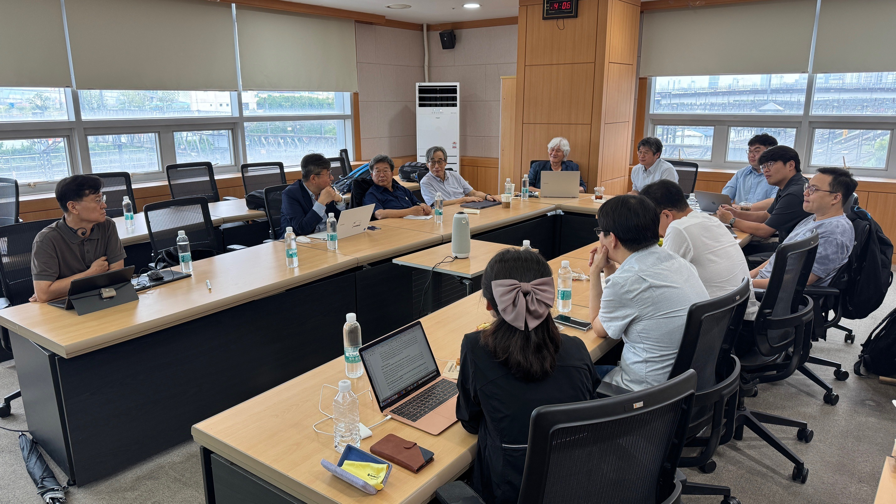
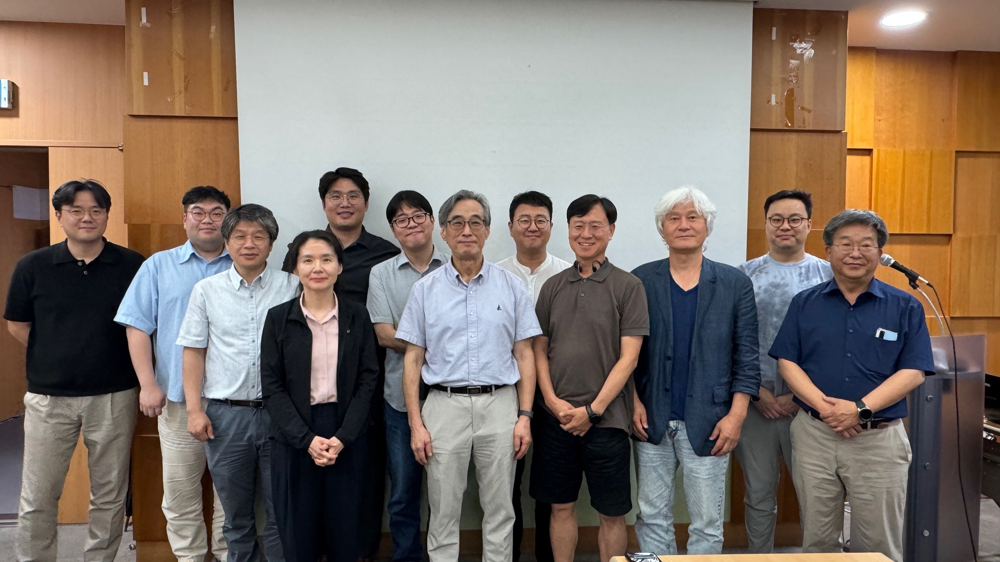

한국해양학위원회(KOSCOR, Korea Scientific Committee on Oceanic Research)는 국제학술협의회(ISC) 산하 해양연구학술위원회(SCOR)의 한국 대표 위원회입니다. 국내 해양학계의 국제 교류를 촉진하고 글로벌 해양 과학 연구를 선도하기 위해 활동하고 있습니다.
SCOR Subcommittee members (2026.04.01 - 2028.03.31)
| 구분 | 성명 | 소속 |
|---|---|---|
| 위원장 | 장찬주 | 한국해양과학기술원 |
| 위원 | 강동진 | 한국해양과학기술원 |
| 위원 | 권은영 | 부산대학교 |
| 위원 | 김인태 | 한국해양과학기술원 |
| 위원 | 노태근 | 한국해양과학기술원 |
| 위원 | 박재형 | 한국해양과학기술원 |
| 위원 | 박태욱 | 극지연구소 |
| 위원 | 신형철 | 극지연구소 |
| 위원 | 유신재 | 국제해양학위원회 |
| 위원 | 윤승태 | 경북대학교 |
| 위원 | 최근형 | 충남대학교 |
| 위원 | 현정호 | 한양대학교 |
| 위원 | 황점식 | 서울대학교 |
| 간사 | 문중호 | 한국해양과학기술원 |
• SCOR 국제 워킹그룹(Working Groups) 참여 및 국내 연구진 활동 지원
• 연례 KOSCOR 정기 총회 및 학술 심포지엄 개최
• 국제 해양학 학술 교류 및 네트워크 구축 활동
(※ 세부 활동 내역은 추후 업데이트될 예정입니다.)


KOSCOR 문의사항은 아래 이메일로 연락주시기 바랍니다.
Email: info@koscor.or.kr